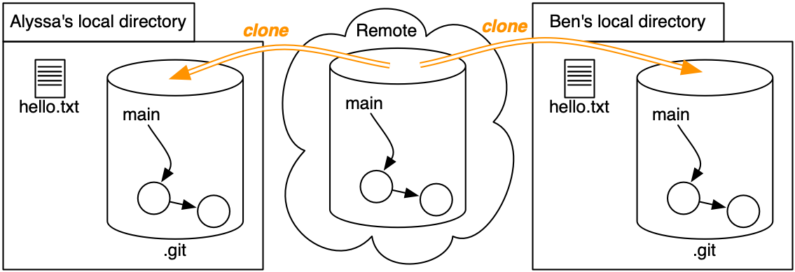

Team Version Control with Git
Objectives
Git workflow
You’ve been using Git for problem sets and in-class exercises for a while now. Most of the time, you haven’t had to coordinate with other people pushing and pulling to and from the same repository as you at the same time. For the group project, that will change.
Now that you’re more comfortable with Git basics, it’s a good time to go back and review some of the resources from the beginning of the semester.
Review our introduction to version control: one developer, multiple developers, and branches.
Viewing commit history
Review 2.3 Viewing the Commit History from Pro Git.
You don’t need to remember all the different command-line options presented in the book! Instead, learn what’s possible so you know what to search for when you need it.
Graph of commits
Recall that the history recorded in a Git repository is a directed acyclic graph (DAG).
When you’re working independently, on a single machine, the DAG of your version history will usually look like a sequence: commit 1 is the parent of commit 2 is the parent of commit 3…
There are three programmers involved in the history of our example repository. Two of them – Alyssa and Ben – made changes “at the same time.” In this case, “at the same time” doesn’t mean precisely contemporaneous. Instead, it means they made two different new versions based on the same previous version, just as Alice made versions “5L” and “5D” on her laptop and desktop.
⋮ * commit 82e049e248c63289b8a935ce71b130a74dc04152 | Author: Ben Bitdiddle <ben.bitdiddle@example.com> | Greeting in Ruby | | * commit 64009369c5ab93492931ad07962ee81bda921ded |/ Author: Alyssa P. Hacker <alyssa.p.hacker@example.com> | Greeting in Scheme | * commit 1255f4e4a5836501c022deb337fda3f8800b02e4 | Author: Max Goldman <maxg@mit.edu> | Change the greeting ⋮
Finally, the history DAG changes from tree-shaped to graph-shaped when the branching changes are merged together:
⋮ * commit 3e62e60a7b4a0c262cd8eb4308ac3e5a1e94d839 |\ Author: Max Goldman <maxg@mit.edu> | | Merge | | * | commit 82e049e248c63289b8a935ce71b130a74dc04152 | | Author: Ben Bitdiddle <ben.bitdiddle@example.com> | | Greeting in Ruby | | | * commit 64009369c5ab93492931ad07962ee81bda921ded |/ Author: Alyssa P. Hacker <alyssa.p.hacker@example.com> | Greeting in Scheme | * commit 1255f4e4a5836501c022deb337fda3f8800b02e4 | Author: Max Goldman <maxg@mit.edu> | Change the greeting ⋮
Merging
Sometimes, when you try to push, things will go wrong. You might get an output like this:
! [rejected] main -> main (non-fast-forward)
What’s going on here is that Git won’t let you push to a repository unless all your commits come after all the ones already in the remote repository. If you get an error message like that, it means that there is a commit in your remote repository that you don’t have in your local one (on a project, probably because a teammate pushed before you did). If you find yourself in this situation, you have to pull first and then push.
Let’s examine what happens when changes occur in parallel:
Hover or tap on each step to update the diagram:
- Both Alyssa and Ben clone the repository with two commits (
41c4b8fand1255f4e). - Alyssa creates
hello.scmand commits her change as6400936. - At the same time, Ben creates
hello.rband commits his change as82e049e.
At this point, both of their changes only exist in their local repositories. In each repo,mainnow points to a different commit. - Let’s suppose Alyssa is the first to push her change up to the remote.
- What happens if Ben tries to push now?
The push will be rejected: if the server updates
mainto point to Ben’s commit, Alyssa’s commit will disappear from the project history! - Ben must merge his changes with Alyssa’s.
To perform the merge, he pulls her commit from the remote, which does two things:
(a) Downloads new commits into Ben’s repository’s object graph - (b) Merges Ben’s history with Alyssa’s, creating a new commit (
3e62e60) that joins together the two histories. This commit is a snapshot like any other: a snapshot of the repository with both of their changes applied. - Now Ben can
git push, because no history will go missing when he does. - And Alyssa can
git pullto obtain Ben’s work.

In this example, Git was able to merge Alyssa’s and Ben’s changes automatically, because they each modified different files. If both of them had edited the same parts of the same files, Git would report a merge conflict. Ben would have to manually weave their changes together before committing the merge.
Automatic merging
If you made some changes to your repository and you’re trying to incorporate the changes from another repository, you need to merge them together somehow. In terms of commits, what actually needs to happen is that you have to create a special merge commit that combines both changes. How this process actually happens depends on the changes.
If you’re lucky (like Alyssa and Ben in the example above), then the changes you made and the changes that you downloaded from the remote repository don’t conflict.
For example, maybe you changed one file and your project partner changed another.
In this case, it’s safe to just include both changes.
Similarly, maybe you changed different parts of the same file.
In these cases, Git can do the merge automatically.
When you run git pull, it will pop up an editor as if you were making a commit: this is the commit message of the merge commit that Git automatically generated.
Once you save and close this editor, the merge commit will be made and you will have incorporated both changes.
At this point, you should compile your code and run your tests (to make sure the merge really worked) and then try to git push again.
reading exercises
Alice and Bob both start with the same TypeScript file, hello.ts:
/** prints a greeting to the console */
export default function greet(name: string): void {
console.log(greeting() + ", " + name);
}
function greeting(): string {
return "Hello";
}
|
|
(missing explanation)
/** prints a greeting to the console */
export default function greet(name: string): void {
console.log(greeting() + ", " + name);
}
function greeting(): string {
return "Hello";
}(missing explanation)
export default function greet(name: string): void {
console.log(greeting() + ", " + name);
}
function greeting(): string {
return "Hello";
}Alice changes greet(..) to return instead of print:
export default function greet(name: string): string {
return greeting() + ", " + name;
}Bob creates a new file, main.ts:
import greet from './hello';
greet("Eve");(missing explanation)
Practice with GitStream
When Git does a merge, it may need to ask you for a commit message. It will do this by opening up a text editor. In case you haven’t been using a text editor to write your commit messages, let’s make sure your Git is still configured to pop up an editor that you can find and use.
reading exercises
Assuming your Git is now configured to use an editor that you are comfortable with, try having Git open the editor by running this command:
git config --global --editThis will open your Git configuration file in the editor. If the editor is VS Code or another graphical text editor, then Git will say “hint: Waiting for your editor to close the file…” This is a signal for you to go to VS Code and look for the tab that Git has just opened there.
If this were a merge commit, then you would proceed to edit the file to add your commit message. But for this test, don’t change your configuration file at all. If you accidentally typed something, make sure to undo it and not save it.
Instead, just close the tab.
Then go back to the prompt where you ran the git command, and you should see that the command it is now back to the prompt.
When Git pops up a tab in VS Code, you always need to close the tab in order for Git to continue.
(missing explanation)
Now try this merge exercise in GitStream.
GitStream will not work with multiple exercise pages open at the same time.
Don’t open exercises in multiple tabs. If an exercise doesn’t work, please close all open GitStream pages and try again.
If you encounter a problem, please ask for help.
Note that GitStream doesn’t keep track of whether you’ve already done this exercise. To see which GitStream exercises you’ve already done, look at Omnivore.
Merge conflicts
Sometimes, you’re not so lucky.
If the changes you made and the changes you pulled edit the same part of the same file, Git won’t know how to resolve it.
This is called a merge conflict.
In this case, you will get an output that says CONFLICT in big letters.
If you run git status, it will show the conflicting files with the label Both modified.
You now have to edit these files and resolve them by hand.
First, open the files in Visual Studio Code.
The parts that are conflicted will be really obviously marked with obnoxious <<<<<<<<<<<<<<<<<<, ==================, and >>>>>>>>>>>>>>>>>> lines.
Everything between the <<<< and the ==== lines are the changes you made.
Everything between the ==== and the >>>> lines are the changes you pulled in.
It’s your job to figure out how to combine these.
The answer will of course depend on the situation.
Maybe one change logically supersedes the other, or maybe they can be merged somehow.
You should edit the file to your satisfaction and remove the <<<</====/>>>> markers when you’re done.
As just described, Git’s default is to show you a two-way difference when you have a merge conflict – the change that you made, and the change that you pulled in.
To make it easier to understand a merge conflict, it helps to have Git show a three-way difference instead, which includes the original version of the code as well, before you or your teammate changed it. A three-way difference looks like this in the code file:
<<<<<<<<<<<<<<<<< . . your version of the code, containing your change . ||||||||||||||||||| . . the original version of the code . (the ancestor of both your change and the incoming changes) . ================== . . the incoming version of the code . (containing the change you just pulled) . >>>>>>>>>>>>>>>>>>
Enable three-way differencing right now, because it will help with the upcoming GitStream exercise, and with any merge conflicts you have in the future:
git config --global merge.conflictstyle diff3Once you have resolved all the conflicts (note that there can be several conflicting files, and also several conflicts per file), you should compile your code and run your tests.
Then git add all the affected files and then git commit.
You will have an opportunity to write the merge commit message (where you should describe how you did the merge).
Now you should be able to push.
Using version control in a team
Every team develops its own standards for version control, and the size of the team and the project they’re working on is a major factor. Here are some guidelines for a small-scope team project of the kind you will undertake in 6.102:
Communicate. Tell your teammates what you’re going to work on. Tell them that you’re working on it. And tell them that you worked on it. Write useful, descriptive commit messages. Communication is the best way to avoid wasted time and effort cleaning up broken code.
Write specs. Necessary for the things we care about in 6.102 and part of good communication.
Write tests. Don’t wait for a giant pile of code to accumulate before you try to test it. Avoid having one person write tests while another person writes implementation (unless the implementation is a prototype you plan to throw away). Write tests first to make sure you agree on the specs. Everyone should take responsibility for the correctness of their code.
Run the tests. Tests can’t help you if you don’t run them. Run them before you start working, run them again before you commit.
Automate. You’ve already automated your tests with a tool like Mocha, but now you want to automate running those tests whenever the project changes. For 6.102 group projects, we provide Didit as a way to automatically run your tests every time a team member pushes to github.mit.edu. This also removes “it worked on my machine” from the equation: either it works in the automated build, or it needs to be fixed.
Review what you commit. Use
git diff --stagedor a GUI program to see what you’re about to commit. Run the tests. Don’t usecommit -a, that’s a great way to fill your repo with debugging print statements and other stuff you didn’t mean to commit. Don’t annoy your teammates by committing code that doesn’t compile, spews debug output, isn’t actually used, etc.Pull before you start working. Otherwise, you probably don’t have the latest version as your starting point — you’re editing an old version of the code! You’re guaranteed to have to merge your changes later, and you’re in danger of having to waste time resolving a merge conflict.
Sync up. At the end of a day or at the end of a work session, make sure everyone has pushed and pulled all the changes, you’re all at the same commit, and everyone is satisfied with the state of the project.
We don’t necessarily recommend using features like branching or rebasing for 6.102-sized projects. Working on separate branches is extremely important when the size of the project, the length of time, or the number of people is much larger than the small, 1–2-week, 3-person final project in this class. For 6.102, focus on clear communication and frequent syncing-up of the whole team.